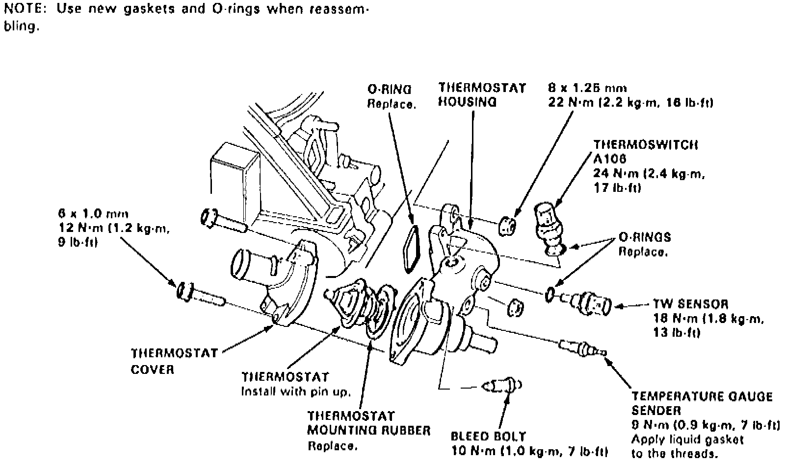

Operation CHARM
: Car repair manuals for everyone.
Home
>>
Acura
>>
1994
>>
Vigor L5-2451cc 2.5L SOHC G25A4 FI
>>
Repair and Diagnosis
>>
Engine, Cooling and Exhaust
>>
Cooling System
>>
Thermostat
>>
Service and Repair
Thermostat: Service and Repair
Fig. 104 Thermostat Replacement:

Refer to
Fig. 104
for thermostat replacement.